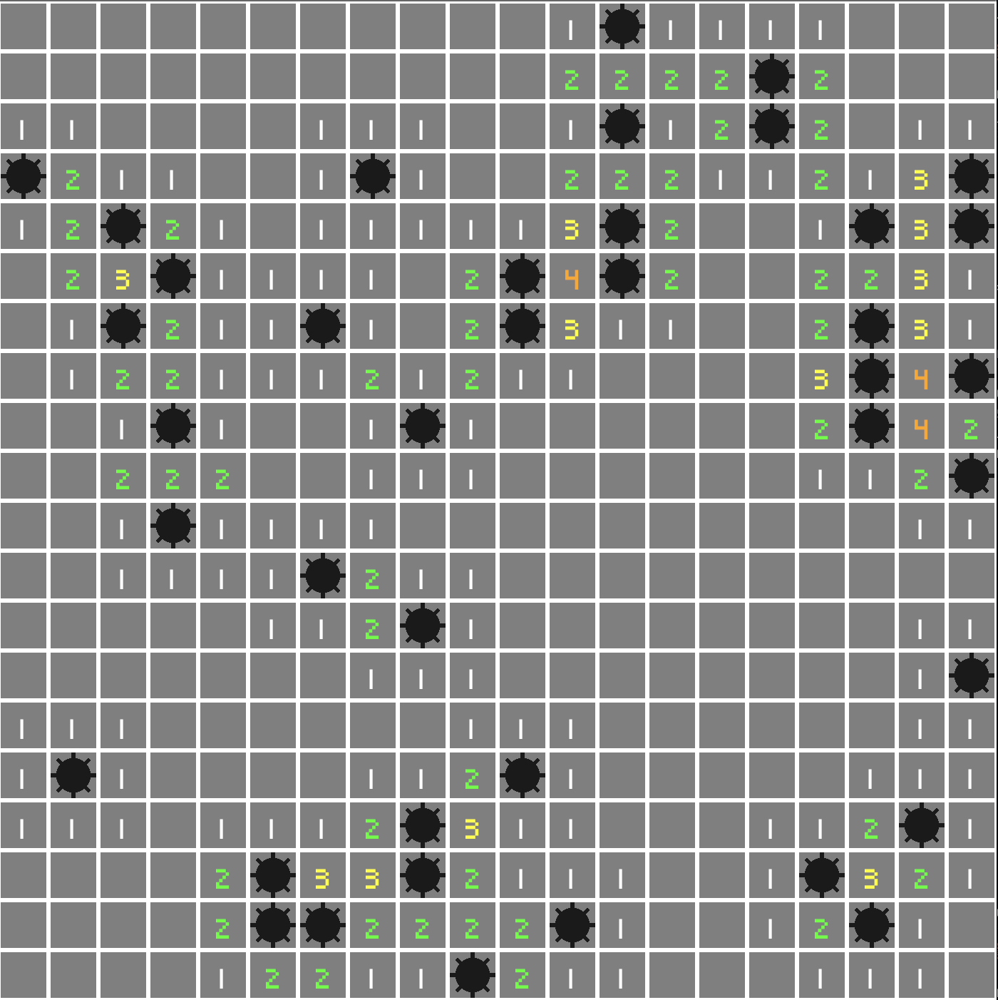

Tiles and Components
Assets
Let's complete our board, for this we will need assets:
- A bomb png texture
- A font
(You can use the assets from the tutorial repository)
Place your assets in an assets folder at the root of your project
├── Cargo.lock
├── Cargo.toml
├── assets
│ ├── fonts
│ │ └── my_font.ttf
│ └── sprites
│ ├── bomb.png
├── board_plugin
│ ├── Cargo.toml
│ └── src
│ ├── components
│ ├── lib.rs
│ └── resources
├── src
│ └── main.rs
Let's load these assets in our create_board startup system.
For this we need to add an argument to the system:
#![allow(unused)] fn main() { pub fn create_board( mut commands: Commands, board_options: Option<Res<BoardOptions>>, window: Res<WindowDescriptor>, asset_server: Res<AssetServer>, // The AssetServer resource ) { }
The AssetServer resource allows loading files from the assets folder.
We can now load our assets right at the beginning of the function and retrieve handles:
#![allow(unused)] fn main() { // lib.rs // .. let font = asset_server.load("fonts/pixeled.ttf"); let bomb_image = asset_server.load("sprites/bomb.png"); // .. }
Component declaration
Our tile map knows which tile is a bomb, a bomb neighbor or empty, but the ECS doesn't.
Let's declare components we will attach to our tile entities in our plugin under board_plugin/components with our Coordinates component:
board_plugin/src/components/bomb.rsboard_plugin/src/components/bomb_neighbor.rsboard_plugin/src/components/uncover.rs
#![allow(unused)] fn main() { // board_plugin/src/components/mod.rs pub use bomb::Bomb; pub use bomb_neighbor::BombNeighbor; pub use uncover::Uncover; mod bomb; mod bomb_neighbor; mod uncover; }
Bomb
This component will identify a tile as a bomb
#![allow(unused)] fn main() { // bomb.rs use bevy::prelude::Component; /// Bomb component #[cfg_attr(feature = "debug", derive(bevy_inspector_egui::Inspectable))] #[derive(Debug, Copy, Clone, Ord, PartialOrd, Eq, PartialEq, Hash, Component)] pub struct Bomb; }
Bomb neighbor
This component will identify a tile as bomb neighbor
#![allow(unused)] fn main() { use bevy::prelude::Component; /// Bomb neighbor component #[cfg_attr(feature = "debug", derive(bevy_inspector_egui::Inspectable))] #[derive(Debug, Copy, Clone, Ord, PartialOrd, Eq, PartialEq, Hash, Component)] pub struct BombNeighbor { /// Number of neighbor bombs pub count: u8, } }
Uncover
This component will identify tiles to uncover, we will use it in part 6
#![allow(unused)] fn main() { use bevy::prelude::Component; /// Uncover component, indicates a covered tile that should be uncovered #[cfg_attr(feature = "debug", derive(bevy_inspector_egui::Inspectable))] #[derive(Debug, Copy, Clone, Ord, PartialOrd, Eq, PartialEq, Hash, Component)] pub struct Uncover; }
Let's register the components for the debug inspector in our plugin:
#![allow(unused)] fn main() { // lib.rs #[cfg(feature = "debug")] use bevy_inspector_egui::RegisterInspectable; use components::*; impl Plugin for BoardPlugin { fn build(&self, app: &mut App) { // .. #[cfg(feature = "debug")] { // registering custom component to be able to edit it in inspector app.register_inspectable::<Coordinates>(); app.register_inspectable::<BombNeighbor>(); app.register_inspectable::<Bomb>(); app.register_inspectable::<Uncover>(); } } } }
Component use
Let's create a function for BoardPlugin creating a Text2DBundle for our bomb counters:
#![allow(unused)] fn main() { /// Generates the bomb counter text 2D Bundle for a given value fn bomb_count_text_bundle(count: u8, font: Handle<Font>, size: f32) -> Text2dBundle { // We retrieve the text and the correct color let (text, color) = ( count.to_string(), match count { 1 => Color::WHITE, 2 => Color::GREEN, 3 => Color::YELLOW, 4 => Color::ORANGE, _ => Color::PURPLE, }, ); // We generate a text bundle Text2dBundle { text: Text { sections: vec![TextSection { value: text, style: TextStyle { color, font, font_size: size, }, }], alignment: TextAlignment { vertical: VerticalAlign::Center, horizontal: HorizontalAlign::Center, }, }, transform: Transform::from_xyz(0., 0., 1.), ..Default::default() } } }
It takes in parameter:
count: the neighboring bomb count to printfont: a assetHandleof our fontsize: a text size
The colors are completely arbitrary.
Again, we put the z value of the Transform translation to 1. so the text is printed on top of the tile.
We can now move our tile spawning loop into a distinct function:
#![allow(unused)] fn main() { // lib.rs fn spawn_tiles( parent: &mut ChildBuilder, tile_map: &TileMap, size: f32, padding: f32, color: Color, bomb_image: Handle<Image>, font: Handle<Font>, ) { // Tiles for (y, line) in tile_map.iter().enumerate() { for (x, tile) in line.iter().enumerate() { let coordinates = Coordinates { x: x as u16, y: y as u16, }; let mut cmd = parent.spawn(); cmd.insert_bundle(SpriteBundle { sprite: Sprite { color, custom_size: Some(Vec2::splat(size - padding)), ..Default::default() }, transform: Transform::from_xyz( (x as f32 * size) + (size / 2.), (y as f32 * size) + (size / 2.), 1., ), ..Default::default() }) .insert(Name::new(format!("Tile ({}, {})", x, y))) .insert(coordinates); } } } }
- Notice we now use a temporary
cmdvalue for our entity builder*
We can now call it from our create_board startup system, in our with_children block after the background spawn:
#![allow(unused)] fn main() { // lib.rs // .. Self::spawn_tiles( parent, &tile_map, tile_size, options.tile_padding, Color::GRAY, bomb_image, font, ); }
Then we complete our spawn_tiles function to add our bombs sprites and counter texts inside the double for loop:
#![allow(unused)] fn main() { // lib.rs use resources::tile::Tile; // .. match tile { // If the tile is a bomb we add the matching component and a sprite child Tile::Bomb => { cmd.insert(Bomb); cmd.with_children(|parent| { parent.spawn_bundle(SpriteBundle { sprite: Sprite { custom_size: Some(Vec2::splat(size - padding)), ..Default::default() }, transform: Transform::from_xyz(0., 0., 1.), texture: bomb_image.clone(), ..Default::default() }); }); } // If the tile is a bomb neighbour we add the matching component and a text child Tile::BombNeighbor(v) => { cmd.insert(BombNeighbor { count: *v }); cmd.with_children(|parent| { parent.spawn_bundle(Self::bomb_count_text_bundle( *v, font.clone(), size - padding, )); }); } Tile::Empty => (), } // .. }
Until now all tiles had identical components like Coordinates, Transform, Sprite, etc.
But now some tiles have:
- A
Bombcomponent and a child entity with the bomb sprite - A
BombNeighborcomponent and a child entity with the counter text
We added a texture to the bomb sprite, what about the others?
By default, a white square texture is used if no texture is specified on SpriteBundle. In Part 9 we will see it in more detail.
Let's run our app and get our beautiful board:

Author: Félix de Maneville Follow me on Twitter